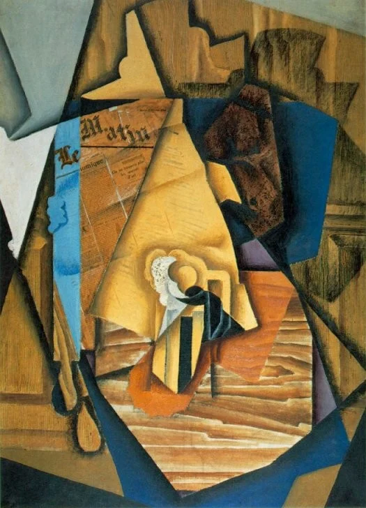
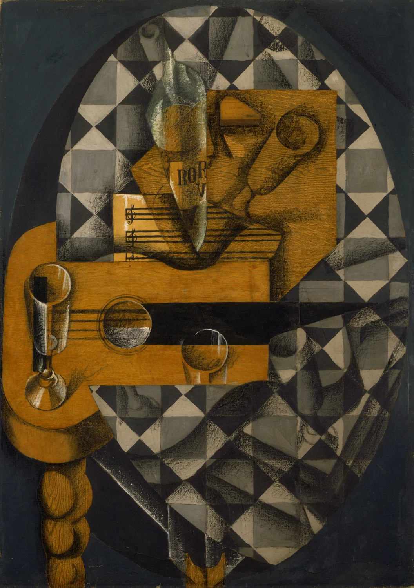
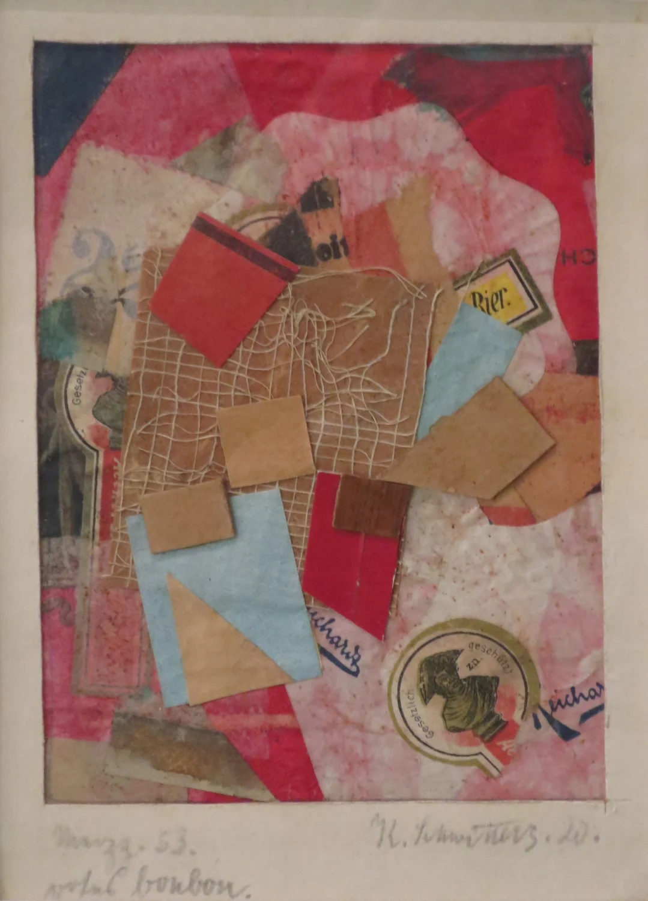
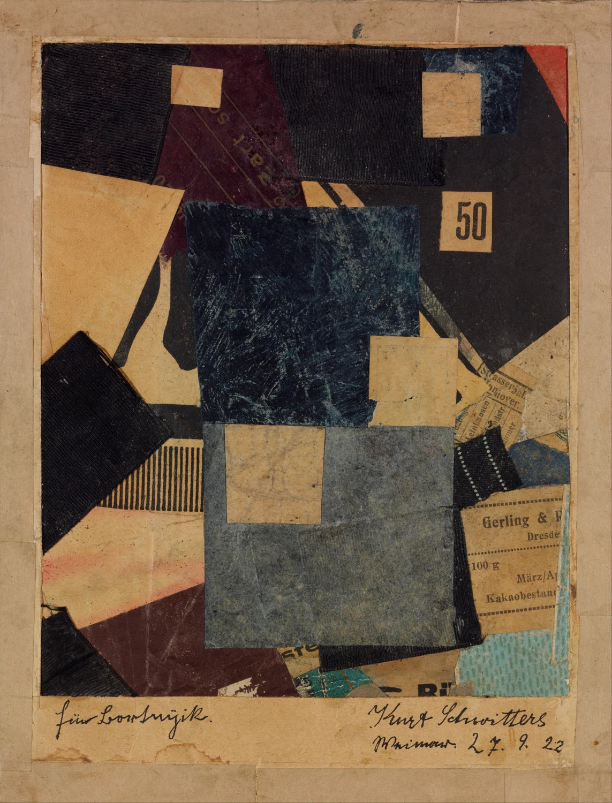

選定理由・よく研究されている
メトロポリタン美術館の解説は、異なる木目模様でテーブルや壁を描き分けた点に注目しています。帽子と新聞を探すと、貼った紙の境目から人物の姿が浮かびます。
作品・制作の例7件を紹介しています。実作品画像4点、参照・関連画像0点。画像の収集は継続中です。
技法・制作方法
Collage
紙や布の切れ端を貼ると、描くだけではできない画面が生まれます。コラージュは、別々の材料を組み合わせてつくる方法です。印刷された文字や、紙の手ざわりも作品の一部になります。
グリスの貼り紙からシュヴィッタースのメルツまで、制作年の古い順にたどります。
実作品を見る

画像を表示できませんでした。下の出典ページで確認できます。
フアン・グリス / 1914年
メトロポリタン美術館の解説は、異なる木目模様でテーブルや壁を描き分けた点に注目しています。帽子と新聞を探すと、貼った紙の境目から人物の姿が浮かびます。
メトロポリタン美術館所蔵／Wikimedia Commons
出典で作品・資料を見る ↗Public Domain Mark 1.0
作品の所蔵・権利情報 ↗画像の利用条件 ↗画像全体を縮小しWebPに変換。
実作品を見る

画像を表示できませんでした。下の出典ページで確認できます。
フアン・グリス / 1914年
同じ時期のグリスが、貼った紙と描いた線をひとつの静物画に組み込んだ例。紙の縁とギターの輪郭がどこで出会うかをたどれます。
MoMA所蔵／Wikimedia Commons
出典で作品・資料を見る ↗Public Domain Mark 1.0
作品の所蔵・権利情報 ↗画像の利用条件 ↗画像全体を縮小しWebPに変換。
実作品を見る

画像を表示できませんでした。下の出典ページで確認できます。
クルト・シュヴィッタース / 1920年
色紙と印刷物に糸も加えた、小さなメルツ作品。紙の切れ方、赤い断片、糸の細さを比べると、素材の違いが構図にどう関わるかが分かります。
グッゲンハイム美術館所蔵／Wikimedia Commons
出典で作品・資料を見る ↗Public Domain Mark 1.0
作品の所蔵・権利情報 ↗画像の利用条件 ↗画像全体を縮小しWebPに変換。
実作品を見る

画像を表示できませんでした。下の出典ページで確認できます。
クルト・シュヴィッタース / 1922年
所蔵館が素材や贈られた経緯を記録している作品。切符や包装紙、新聞、布の断片が重なり、日常の印刷物が画面の色や大きさを決めています。
ブダペスト国立西洋美術館所蔵／Google Arts & Culture、Wikimedia Commons
出典で作品・資料を見る ↗Public Domain Mark 1.0
作品の所蔵・権利情報 ↗画像の利用条件 ↗画像全体を縮小しWebPに変換。
実在する作品・制作物（個別の分野は domain を参照）
油絵の具に、切り貼りや実物の材料を加えています。描いた面と貼った物の違いをたどれる例です。
作品・資料の出典を見る ↗原題：Merzbild 1A (The Psychiatrist)
クルト・シュヴィッタース / 1919 / 油彩・コラージュ・物の組み合わせ
日本語の見出しは読みやすさのための呼び名・説明名です。原題は記録欄に示しています。
画像の転載条件は未確認。出典の公開は転載許諾ではありません。
実在する作品・制作物（個別の分野は domain を参照）
紙と布を紙の上に貼った作品です。紙面の印刷だけでなく、布の織り目も構成に加わる点を見ます。
作品・資料の出典を見る ↗原題：Mz 457
クルト・シュヴィッタース / 1921 / 紙と布のコラージュ
日本語の見出しは読みやすさのための呼び名・説明名です。原題は記録欄に示しています。
画像の転載条件は未確認。出典の公開は転載許諾ではありません。
実在する作品・制作物（個別の分野は domain を参照）
チョコレートの包み紙、菓子の透明な包装、入場券、飲料のラベルを組み合わせています。捨てられる小さな紙が、画面の色や形に変わるところを見ます。
作品・資料の出典を見る ↗原題：Merzzeichnung 24/18 (Kaiser-Friedrich-Quelle)
クルト・シュヴィッタース / 1924 / 紙のコラージュ
日本語の見出しは読みやすさのための呼び名・説明名です。原題は記録欄に示しています。
画像の転載条件は未確認。出典の公開は転載許諾ではありません。
パピエ・コレ、絵具ほか
メトロポリタン美術館の解説は、異なる木目模様でテーブルや壁を描き分けた点に注目しています。帽子と新聞を探すと、貼った紙の境目から人物の姿が浮かびます。
作品・資料の出典を見る ↗原題：The Man at the Café
フアン・グリス / 1914年 / パピエ・コレ、絵具ほか
パピエ・コレ、絵具ほか
同じ時期のグリスが、貼った紙と描いた線をひとつの静物画に組み込んだ例。紙の縁とギターの輪郭がどこで出会うかをたどれます。
作品・資料の出典を見る ↗原題：Guitar and Glasses
フアン・グリス / 1914年 / パピエ・コレ、絵具ほか
紙、厚紙、糸、黒鉛のコラージュ
色紙と印刷物に糸も加えた、小さなメルツ作品。紙の切れ方、赤い断片、糸の細さを比べると、素材の違いが構図にどう関わるかが分かります。
作品・資料の出典を見る ↗原題：Merzz. 53. Red Bonbon.
クルト・シュヴィッタース / 1920年 / 紙、厚紙、糸、黒鉛のコラージュ
紙片・布などのコラージュ
所蔵館が素材や贈られた経緯を記録している作品。切符や包装紙、新聞、布の断片が重なり、日常の印刷物が画面の色や大きさを決めています。
作品・資料の出典を見る ↗原題：Merz Composition
クルト・シュヴィッタース / 1922年 / 紙片・布などのコラージュ
クルト・シュヴィッタースは、捨てられた紙などを使う制作を「メルツ」と呼びました。材料の元の用途が残ることと、新しい形に見えることの両方に注目します。
塗った色と、もとの紙の色を区別します。
文字は読める言葉であり、黒い形でもあります。
紙の切り口や布の織り目、重ねた厚さを見ます。
断片が集まって、大きなかたまりや斜めの流れをつくります。
写真中心のフォトモンタージュと違い、紙や布そのものの性質も使います。立体物を組み合わせる仕事はアサンブラージュとも呼ばれます。
デジタルの切り貼りでは、実物の厚さまでは再現できません。どこを切り取り、何を隠したかを見ると考え方が伝わります。
グリスの貼り紙とシュヴィッタースの紙片を見比べます。のりで留めた紙の縁や、印刷された文字も構図の一部です。
作品・制作の例7件を紹介しています。実作品画像4点、参照・関連画像0点。画像の収集は継続中です。